DumTech Hub
Os sete módulos são vendidos separados e cada um resolve o trabalho dele sozinho. O que muda quando o cliente compra o segundo, e o terceiro, é que eles param de ser sete programas e viram um só.
Feito sobre a instalação real, com a loja de demonstração carregada. Todas as imagens são telas do produto, sem montagem.
A resposta curta
Depende de quantas coisas diferentes o negócio faz. Cada módulo cobre uma operação inteira, do cadastro ao documento impresso. O problema nunca é o módulo ser incompleto — é o negócio ter duas operações e comprar uma.
Basta. O Vendas sozinho abre caixa, recebe em várias formas, faz venda a prazo, devolução e imprime o comprovante. Sem o Estoque, o item vira texto livre e ninguém sabe quanto sobrou na prateleira.
Quase. O Ordens cobre da entrada à garantia. Mas quem orça antes de executar vai digitar a mesma lista duas vezes até comprar o Orçamentos — e quem parcela o serviço não tem onde cobrar sem o Financeiro.
Não basta. Um módulo só resolve um terço do dia. Estoque, Vendas e Financeiro são a mesma operação vista de três lugares: a venda tira do estoque e vira conta a receber, e nenhuma das duas coisas acontece sem os três.
O efeito de somar
O Início mostra o que precisa de atenção hoje, juntando o que cada módulo já sabia sozinho. É a mesma instalação e o mesmo banco de dados nas duas imagens — muda só o que a licença libera.
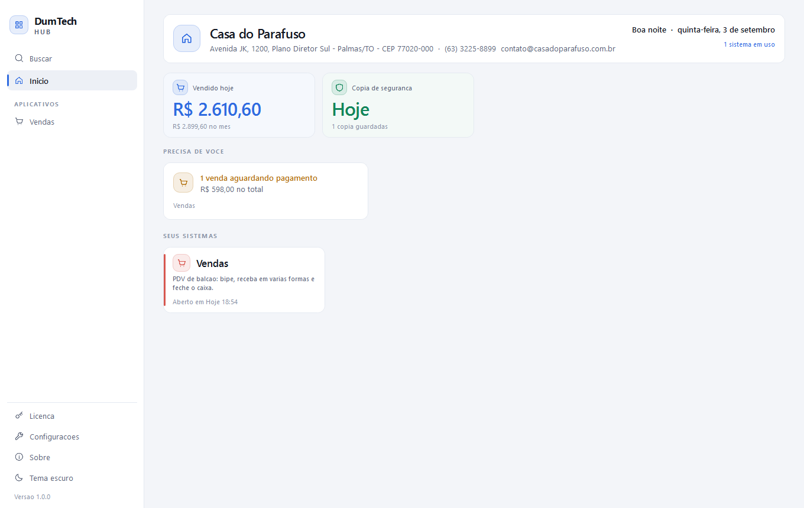
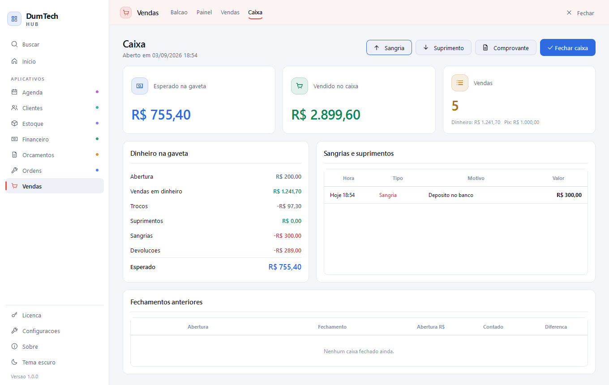
É por isso que o segundo módulo é mais fácil de vender que o primeiro: o cliente já viu a tela pela metade.
Como eles se ligam
Cada módulo tem banco próprio e não enxerga o dos outros. As exceções são combinadas uma a uma, e todas seguem a mesma regra: sem o outro módulo na licença, o botão não aparece e nada quebra.
| Ponte | Entre | O que acontece | Como |
|---|---|---|---|
| Catálogo | Estoque → Vendas | Bipe o código de barras no balcão e o item entra com nome, preço e unidade. A venda dá baixa no estoque; a devolução devolve. | automático |
| Conta a receber | Vendas → Financeiro | Venda a prazo vira conta a receber sozinha. Quando o cliente volta e paga no balcão, a conta se fecha junto. | automático |
| Conta a receber | Ordens → Financeiro | Ordem entregue vira conta a receber. É botão, não automático: boa parte das ordens é paga na hora da entrega. | um clique |
| Proposta aprovada | Orçamentos → Vendas / Ordens | Vira venda pendente ou ordem já aprovada, com os itens e o desconto por linha embutidos no preço. | um clique |
| Agenda de clientes | Clientes → todos | O nome se completa sozinho em qualquer formulário, e o botão de WhatsApp já abre com o número certo. | automático |
| Avisos do Início | todos → Hub | Cada módulo responde “o que precisa de atenção hoje” e o Hub junta na primeira tela. | automático |
Duas ligações que ainda não existem e o cliente pode supor que sim: peça usada numa ordem de serviço não baixa do Estoque, e o item de uma proposta é texto livre — o Orçamentos não lê o catálogo. Vale dizer antes da venda.
Cenário 1
Nenhum módulo é uma versão reduzida esperando os outros.
Quem compra um só tem a operação completa daquela função — cadastro, movimento, painel com números e documento impresso — mais toda a plataforma em volta, que não é vendida à parte.
Ctrl+KO mais completo sozinho é o Estoque — cinco telas, importação e exportação em CSV, contagem de inventário. O mais dependente é o Orçamentos: ele existe para virar trabalho em outro módulo, e sem Vendas ou Ordens a proposta aprovada morre ali.
Cenário 2
Inclusive um ano depois — o tempo entre uma compra e outra não muda nada.
Não existe migração, importação nem reinstalação. A chave é a mesma: o cliente compra o módulo novo, abre Licença → Verificar licença, e o aplicativo aparece no trilho com as pontes já ligadas.
Os dados de cada módulo vivem em arquivos separados e nunca são apagados pela licença. Se um módulo sair da licença, ele some do trilho e o banco continua no lugar — voltou a licença, voltou tudo.
Isso é argumento de venda, não defeito: quanto antes o segundo módulo entra, mais história ele aproveita. Vale dizer já na primeira venda.
Cenário 3
O dia inteiro numa janela só, sem ninguém redigitar nada.
O cliente é cadastrado uma vez, a proposta vira ordem de serviço ou venda, a venda tira do estoque, o que ficou a prazo vira conta a receber, a conta se fecha quando ele paga, e cada etapa manda o WhatsApp com o texto da loja.
Produtos com código de barras, unidade e mínimo; entrada com nota e custo médio; movimentações com histórico; contagem de inventário; importação e exportação em CSV.
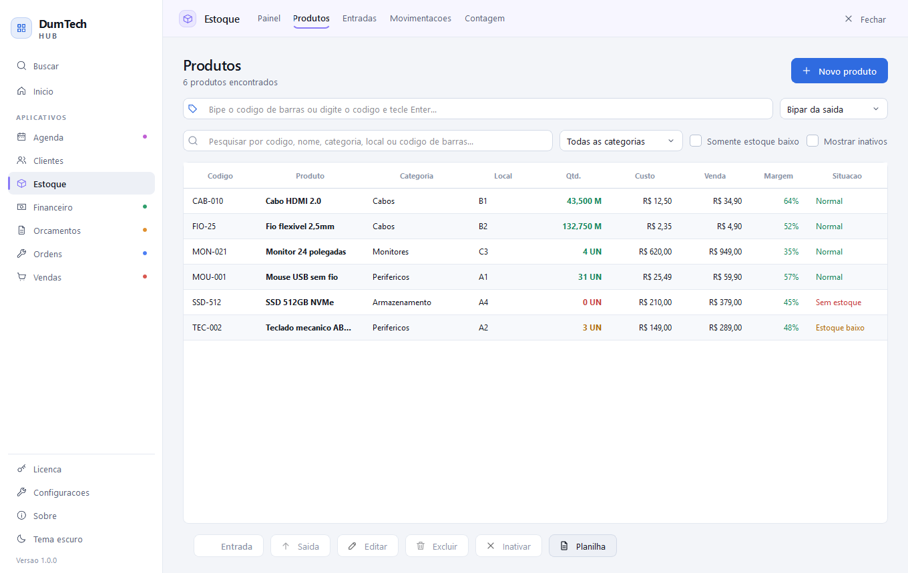
O catálogo para o Vendas: bipe, preço e baixa automática.
Baixa e devolução vindas do Vendas, com o número da venda no histórico.
Toda saída é digitada na mão — ninguém tira do estoque ao vender.
Balcão com bipe e atalhos, várias formas de pagamento na mesma venda, troco, venda a prazo, devolução parcial, caixa com sangria e suprimento, comprovante em bobina de 40 colunas.
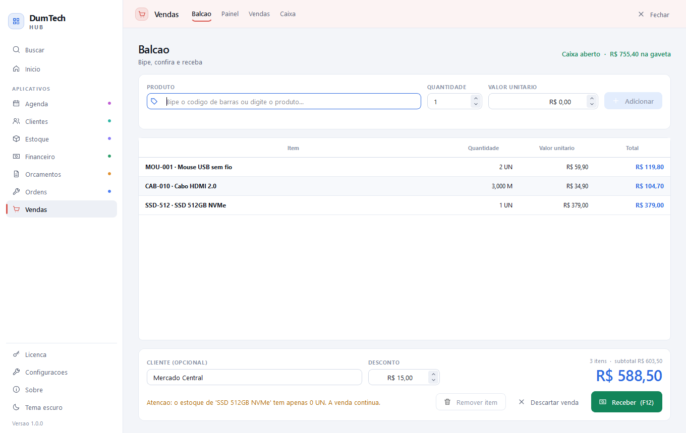
Conta a receber ao Financeiro; baixa ao Estoque.
Catálogo do Estoque; proposta aprovada do Orçamentos.
Item vira texto livre, sem preço nem saldo; o que ficou a prazo vira anotação no papel.
Contas a pagar e receber, parcelamento e recorrência que geram lançamentos de verdade, baixa parcial, contas de caixa e banco, transferência entre elas e a projeção que mostra o dia em que o saldo cruza o zero.
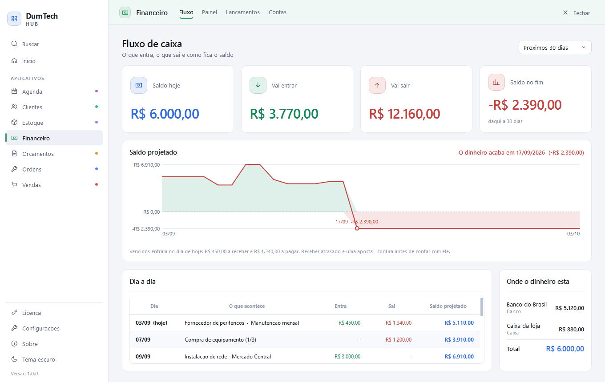
Avisos de vencido e a vencer para o Início.
Contas prontas do Vendas e do Ordens, sem digitar de novo.
Toda conta é digitada à mão, uma a uma, depois da venda.
Bancada por etapa, aprovação com nome e data, peças e serviços separados, garantia contada da entrega, histórico que nunca é apagado, comprovante de entrada em bobina e de entrega em A4.
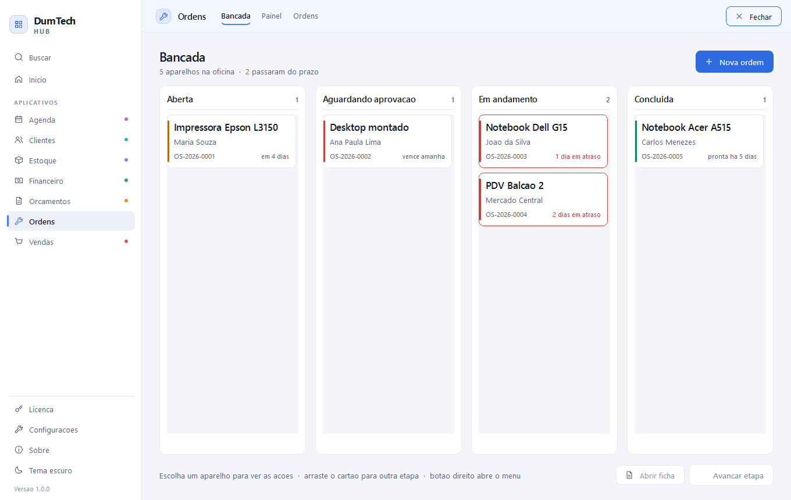
Conta a receber ao Financeiro, com um clique.
Proposta aprovada do Orçamentos, já com os itens.
Peça trocada não sai do estoque, e o serviço fiado não vira cobrança em lugar nenhum.
Proposta com desconto por linha, condição de pagamento e validade; funil com taxa de conversão sobre quem respondeu; o motivo de cada perda; duplicar sem refazer.
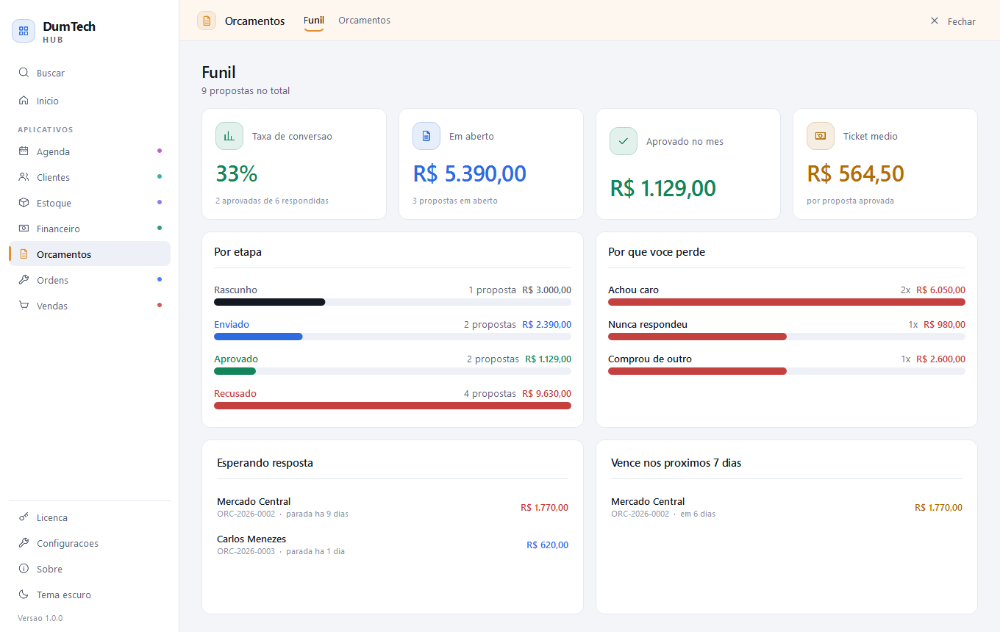
O trabalho pronto para o Vendas ou o Ordens.
Só os nomes de cliente — é o módulo que mais empurra e menos puxa.
A proposta aprovada acaba num PDF: alguém digita tudo de novo do outro lado.
Ficha com documento validado, endereço, aniversário e segmento; anotações datadas do atendimento; aniversariantes do mês; exportação da carteira em CSV.
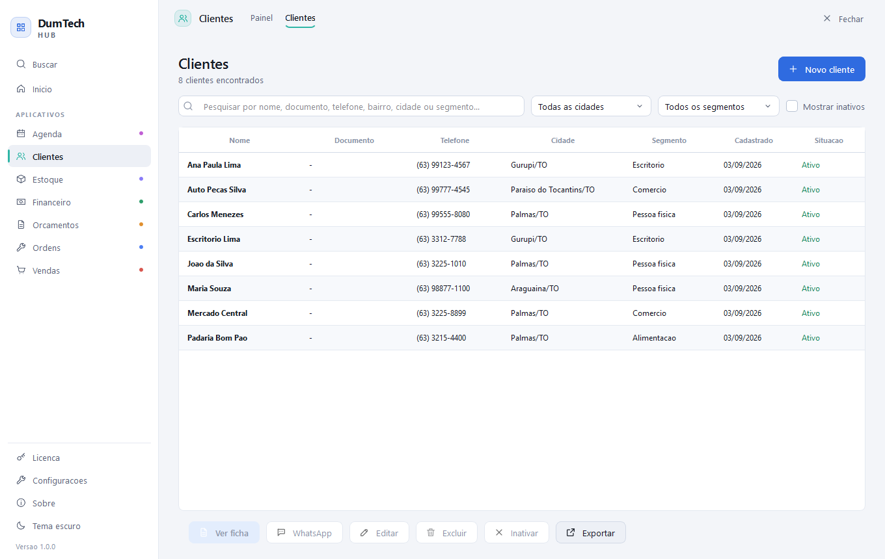
O nome que se completa sozinho e o número do WhatsApp — a todos os módulos.
Nada. Ele é a base que os outros consultam.
Vira uma agenda bonita que não conversa com o trabalho do dia.
Grade da semana desenhada por hora, conflito que avisa em vez de travar, bloqueio de almoço e folga, repetição que gera compromissos de verdade.
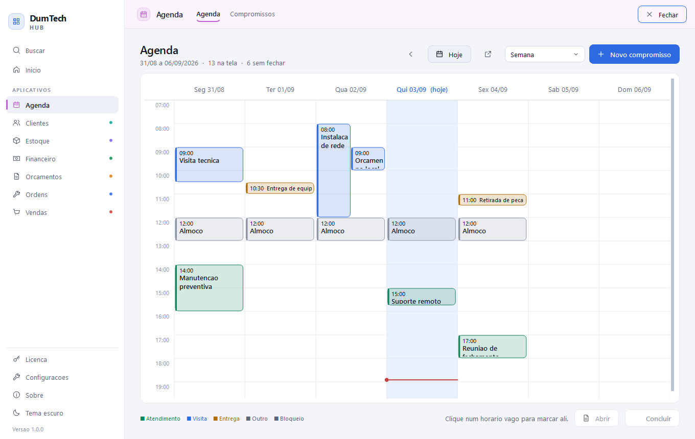
Os compromissos de hoje para o Início.
Nome e WhatsApp do Clientes, para confirmar o horário.
Funciona inteiro — é o que menos depende de companhia.
Não é vendido à parte
Comprando um módulo ou os sete, a plataforma em volta é a mesma.
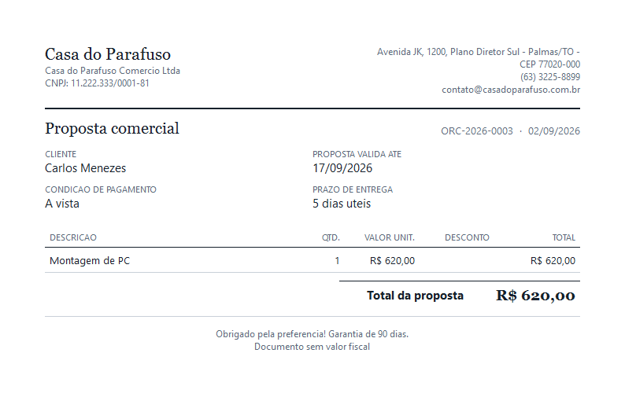
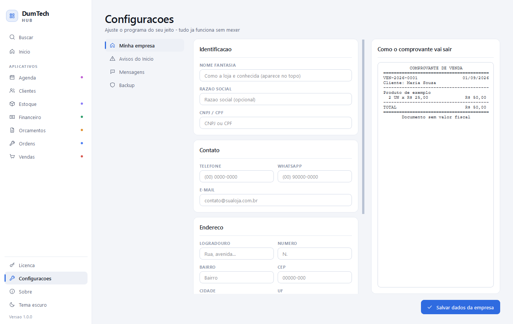
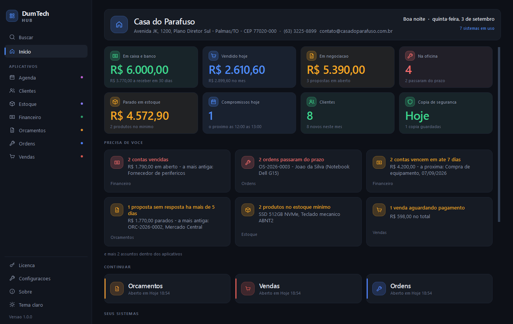
Também entram sem custo: backup automático diário com restauração pela tela,
busca por Ctrl+K, avisos configuráveis e a licença que funciona
para sempre sem internet depois de ativada.
Honestidade comercial
Dito antes da venda, isso protege o negócio. Descoberto depois, vira devolução.
Não emite NFC-e nem NF-e. Todo documento sai marcado “sem valor fiscal”. Quem precisa de nota usa outro sistema junto.
A licença vale por máquina e os dados ficam nela. Não há rede, dois caixas ao mesmo tempo nem sincronização entre lojas.
Quem abre o programa vê tudo. Não há login, permissão por função nem registro de quem fez o quê.
É um programa de Windows. Não há aplicativo, painel web nem acesso de fora da loja.
O Financeiro registra o que aconteceu; ele não conversa com banco, não gera boleto e não concilia extrato.
O link abre a conversa com o texto pronto — quem aperta enviar é a pessoa. Não há disparo em massa nem automação.
A cópia diária é automática, mas por padrão fica no próprio computador. Se o HD queimar, some junto — a tela avisa e pede um pendrive ou pasta de nuvem.
Peça usada numa ordem de serviço não dá baixa. Hoje o controle é manual, e é a ponte mais pedida a fazer.
Como empacotar
Balcão
Vendas + Estoque
A menor combinação que já se paga: bipa, vende, tira do estoque e avisa quando o produto chega ao mínimo. Para mercearia, papelaria, loja de peças.
Balcão com fiado
Vendas + Estoque + Financeiro
A anterior mais a venda a prazo virando cobrança sozinha, com o dia em que o saldo cruza o zero. Resolve o dia inteiro de um comércio pequeno.
Oficina
Ordens + Orçamentos + Clientes
Orça, vira ordem com um clique, entrega com garantia no papel e avisa o cliente no WhatsApp que o aparelho está pronto.
Serviço com hora marcada
Agenda + Clientes + Financeiro
Para salão, consultório, assistência que vai até o cliente: a grade da semana, a confirmação por WhatsApp e o que entra por mês.
DumTech Hub 1.0 · as 54 telas do produto estão em
docs/imagens/telas/, uma pasta por módulo.